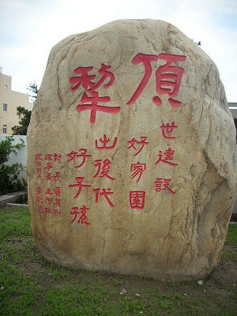
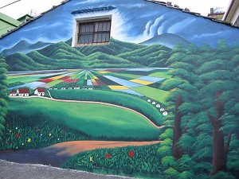
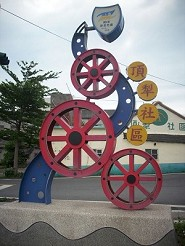
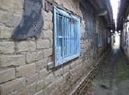

 頂犁社區名稱由來：
頂犁村原名為「二十張犁」，因與和美鎮四張犁相距西北方約一公里，簡稱「頂犁」。聚落包括了山寮、大莊、田中及頂崁四聚落。水源以福馬支圳下犁、頂犁圳之水灌溉，為稻米、荸薺、蒜頭產地。居民姓氏大多為陳、謝、黃三大姓氏。 村內多祭祀福德正神。
頂犁居民原籍地：
頂犁在雍正、乾隆之初，居民大多從中國大陸福建省泉州府晉江縣移墾入居，形成聚落。至今有頂犁本莊、田中、坎頂和山寮等聚落。
地名由來：
頂犁村與下犁村原合稱為「三十張犁」，莊名初稱「抵六莊」，以平補族頭目「抵六」為名。因開墾地有三十張，所以稱之為「三十張犁」。推估於清道光、咸豐年間，才改為今名頂、下犁莊，頂犁一名乃因屬於三十張犁上方而得名。
姓氏分佈：
頂犁姓氏以謝、黃、陳為多，其中慶安宮一帶為謝姓居住密集居，坎頂姓氏以黃姓為主，從塭仔移至此。頂犁本莊，聚落內有姚姓古厝，其家族昔日以中醫為業，其地被成為「藥店口」。
雖然線西鄉是偏遠地區，卻有許多美麗的景觀各個鄉村也其具有特色。頂犁村大多是稻田 ，工廠也多
如有興趣 歡迎到頂犁村踏踏^_^
 |
 |
 |
<--回頂犁村首頁
|